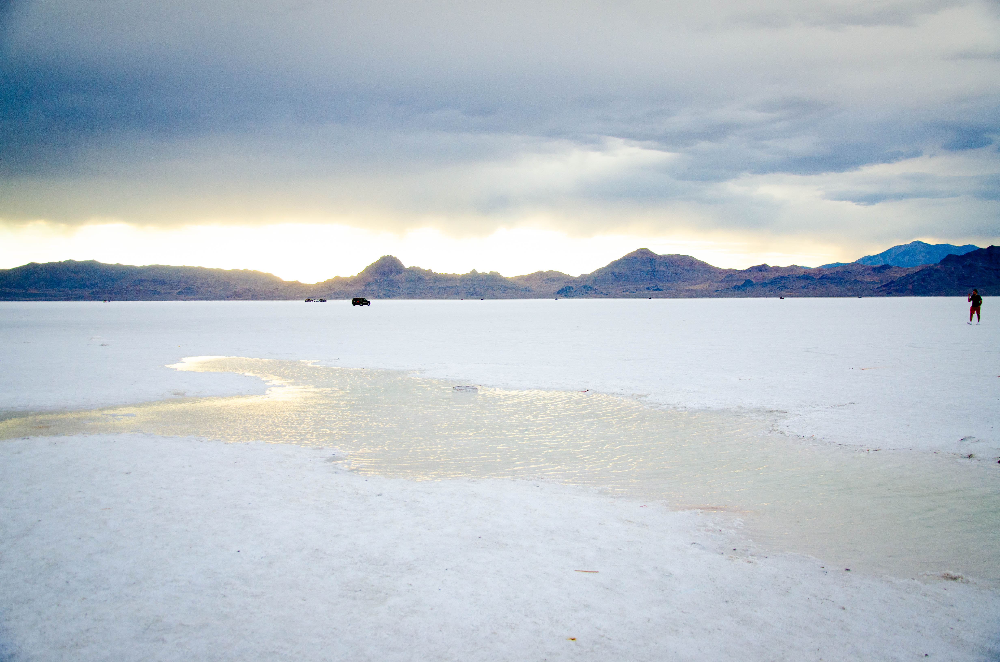
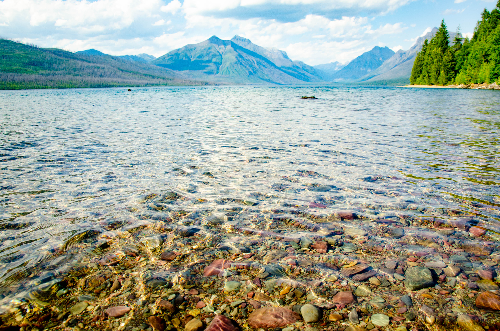
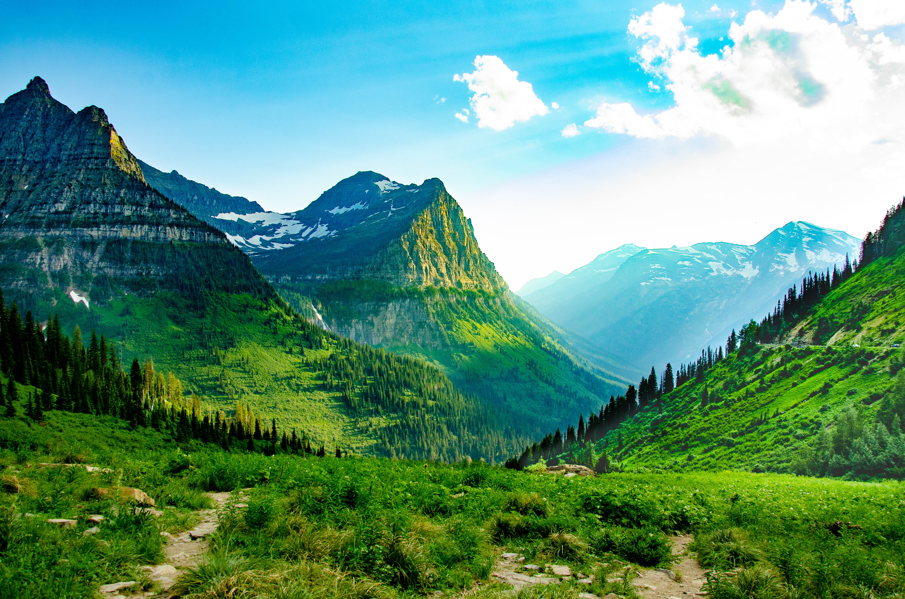
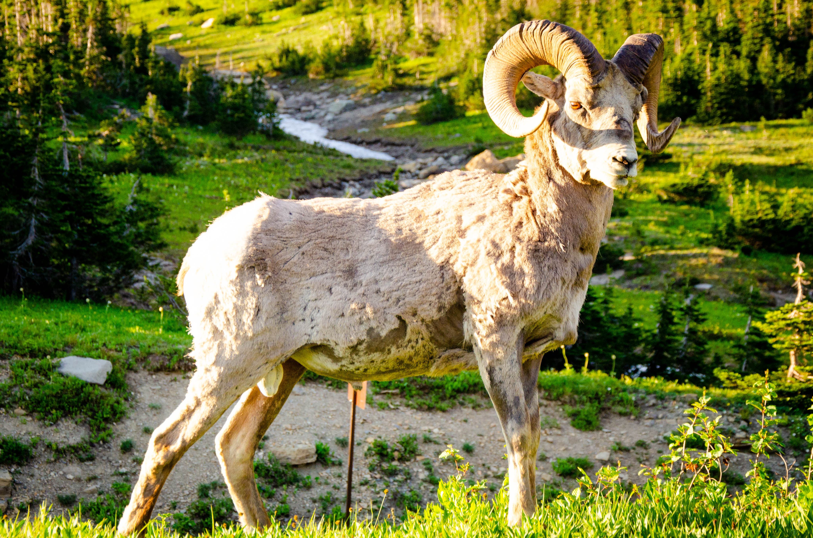
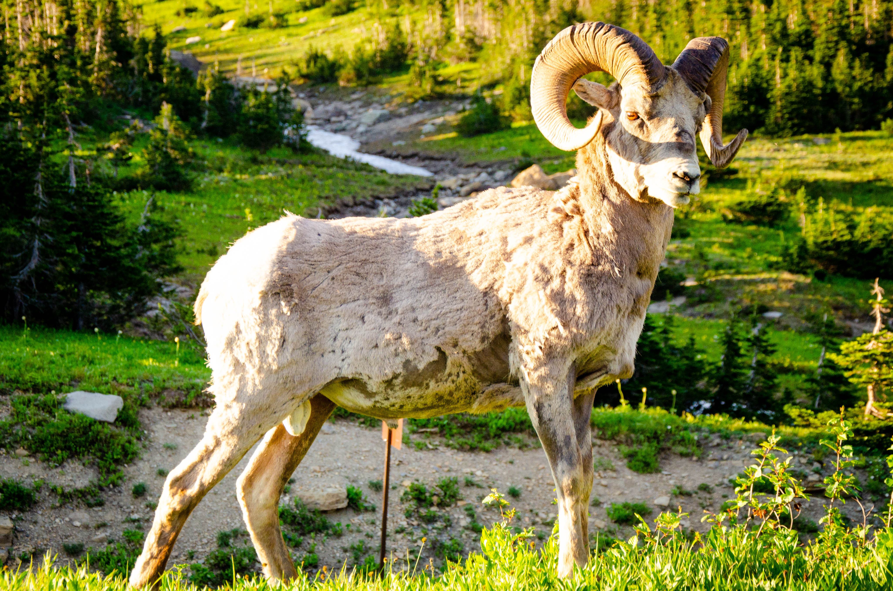

Finally Posting Photography from July 2021
IN WHICH I SHOW SOME PICS FROM SOME PARKS

So I finally got around to editing pics from my national parks travel this summer. The origin story of my national parks hobby is captured in my blog post for XWCL blog. Some things have changed since that post; as of this writing I am at 32 unique parks visited, out of 63 total. So half way there. This summer I hit up some to-do's from that blog post - Glacier National Park, Black Canyon of the Gunnison (completing Colorado), and Yellowstone (completing Wyoming). I had some car trouble tho - got stuck in Salt Lake City over July 4th weekend by a burned out starting motor, and stuck again in Grand Junction for something I can't even remember.
But anyway, here's some pics!
Being stuck in SLC meant I got to do something I had wanted to do forever. I've been to SLC before, so I rented a car and lit out of town to the Bonneville Salt Flats, about 2 hours east. Every time you see one of those car ads in the stark barren salt landscape, it's here. Also land speed records and the like. A wild place.
Lake McDonald in Glacier NP is famous for the rainbow colored rocks and amazing vista.

 

The view from the Big Bend in Going-To-The-Sun Road in Glacier NP, and some animal friends at the Visitors Center at the top.

Prospect Spring Geyser mineral deposits, Yellowstone NP.


A bison showed up as soon as Old Faithful finished its show. He was unperturbed by the crowd, wondered around eating grass for a bit, then walked straight at the crowd on the walkway, climbed up onto it and pushed through the crowd into the parking lot beyond. So don't worry, I didn't approach a bison to get this pic (I'm not dumb), but he approached me!


Grand Prismatic Spring in Yellowstone.


Black Canyon of the Gunnison. The narrowest canyon in the NP system. I didn't get to stay long because a terrible storm pulled up
and I went to find a hotel.